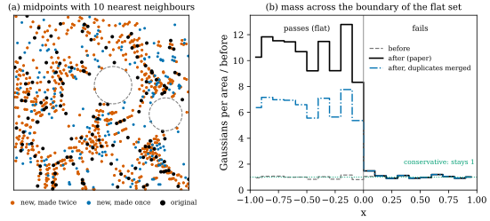

49.7 Assessment
Goals
- 논문이 스스로를 어디에 놓는지(§4)와 무엇을 결론으로 내세우는지(§6)를 말하고, 빠진 비교 대상을 지적할 수 있다.
- 논문의 주장마다 논문 안의 증거와 이 장의 확인 결과를 짝지을 수 있다.
- 이 장에서 찾은 오식과 모호한 곳을 모아, 어느 것이 구현의 숫자를 바꾸고 어느 것이 무해한지 가를 수 있다.
- GeoSplat의 upsampling을 mass 장부가 없는 refinement로 읽고, Chapter 50의 conservative refinement와 비교할 수 있다.
Prerequisites
- 이 장의 앞 절 전부(Section 49.1–Section 49.6). 특히 논문의 주장 목록(Section 49.1)과 실험의 숫자(Section 49.6).
- 네 논문의 지도(Section 46.9).
Motivation
GeoSplat은 두 가지를 동시에 하려는 논문이다. 하나는 실용적인 렌더링 향상이고, 다른 하나는 그 향상을 미분기하로 설명하는 것이다. 앞의 여섯 절은 식과 실험을 하나씩 따졌다. 이 절은 그 결과를 모은다. 논문이 스스로를 어떻게 소개하는지, 무엇이 증거로 뒷받침되는지, 무엇이 인쇄의 문제이고 무엇이 방법의 문제인지, 그리고 이 묶음의 다른 논문들과 어떻게 이어지는지다.
Conclusion (§6) and What Is Missing
결론은 한 문단이다 [GeoSplat25, §6]. 논문은 기존 방법이 거의 쓰지 않은 higher order 기하(curvature)를 활용하는 geometry-constrained Gaussian Splatting의 일반 framework를 소개했고, 실험에서 이 framework가 Gaussian Splatting을 크게 개선하며 기존 기준선을 능가하고 학습 view가 적을 때 artifact가 매우 적다고 요약한다. 또 local manifold 같은 기하 구조에 기반한 효율적인 estimator가 잡음에 강한 dynamic prior를 주어, static하고 잡음에 약한 prior에 기대던 기존 방법의 한계를 넘는다고 쓴다.
논문에는 limitations 절이 없다. 한계에 가까운 언급은 본문과 부록에 흩어져 있다.
- manifold라는 말은 “어디서나 smooth”를 가정하므로 너무 강하다. 그래서 singular point를 허용하는 merged local manifolds(Definition 49.2.1)와 varifold를 도입한다(§2.2, App. A.2).
- curvature가 \(0\)이면 warm-up의 비가 정의되지 않으므로 \([\xi_{\min}, \xi_{\max}]\)로 자른다(§3.1.1, Section 49.3).
- point cloud varifold의 first variation은 locally bounded가 아니므로 approximate curvature를 써야 한다(App. A.2, Section 49.2).
- 부록 E의 방법은 고전 연구와 겹칠 것이다(App. E 도입부).
- 학습 중 재추정은 시간을 조금 늘린다(§3.2).
Claims and Evidence
Section 49.1의 주장 목록을 더 잘게 나누어, 논문 안의 증거와 이 장에서 확인한 것을 나란히 놓으면 다음과 같다.
| claim | evidence | this chapter |
|---|---|---|
| higher order priors improve 3DGS | Tables 1–2: PSNR above GeoGaussian in all 12 scenes (mean +0.78 / +0.38 dB) | numbers check out; rendering metrics only; baselines copied; SSIM exceptions (49.6) |
| curvature-guided warm-up covers the surface better | Table 3: −0.36 / −0.18 dB without it | the ratio \(\abs{\tau_1/\tau_2}\) does not reduce the largest gap; its square root does (Example 49.3.3); the ablation does not separate axes from ratio |
| MAC is the right flatness test | Table 3: +0.12 / +0.03 dB over mean curvature | right geometrically (Example 49.3.5); small effect; \(\xi_{\min}\) depends on units and noise (Example 49.6.2) |
| noise-robust estimators | none | the kernel matrix is a weighted local second moment; no robustness gain over local PCA (Figure 49.5.1); density bias \(p^2\) (Proposition 49.5.11) |
| efficient: millions in tens of seconds | a sentence (§3.2) | cost \(O(NK)\) and \(O(NK^2)\) makes it plausible; no timing (49.4) |
| dynamic priors beat static ones | none | not ablated |
| larger gains with fewer views, fewer artifacts | Fig. 1; Figs. 2–6 (selected views) | visible in Fig. 1; no numbers; “7.93%” fits R1, not R2; Fig. 5 Case 1 keeps a defect (49.6) |
| the estimators are derived from geometry | Prop. 3.1, Thm. 3.2, App. B–E | the derivations go the right way; the printed formulas have the errata of Table 49.7.2; the varifold formula needs a sign fix and a corrected projection (Proposition 49.4.4) |
정리하면, 표의 숫자가 보여 주는 것은 “여섯 구성요소를 모두 켠 시스템이 실내 장면의 렌더링 지표를 일관되게 올린다”는 것이다. 이것은 분명한 결과다. 그러나 논문이 내세우는 기하적 이유, 곧 curvature가 정확히 추정되고 잡음에 강하며 학습 중의 재추정이 중요하다는 것은 실험이 직접 시험하지 않았다. 이 장의 합성 실험(Figure 49.4.2, Figure 49.5.2)은 두 estimator가 깨끗한 점에서는 curvature를 잘 추정한다는 것을 보였다. 잡음과 밀도에 대해서는 논문의 주장보다 약했다.
Upsampling Without a Ledger
한 가지를 더 계산해 보자. upsampling((49.3.5))은 평평하다고 판정된 Gaussian \(i\)마다 \(k\)개의 최근접 이웃 \(j\)와의 중점에 새 Gaussian을 놓는다(부록 F.1의 \(k = 10\)). 부모는 그대로 남고 새 Gaussian은 부모의 속성을 midpoint interpolation으로 얻는다. 이것을 refinement로 보면 두 가지를 물을 수 있다. varifold의 mass가 보존되는가, 그리고 빈 곳이 실제로 채워지는가.
Example 49.7.1 (midpoint upsampling on a flat patch). 단위 정사각형에 고르게 뽑은 점 \(N = 1500\)개가 모두 검사를 통과한다고 하자. 방향이 있는 쌍 \((i, j)\)가 \(kN = 15000\)개 생기고 새 Gaussian도 그만큼 생긴다. \(j\)도 \(i\)를 이웃으로 골랐다면(서로 이웃) 같은 중점이 두 번 만들어진다. 서로 이웃인 쌍의 수를 \(M\)이라 하면
이다. 이 예에서 새 Gaussian의 \(86\%\)가 서로 이웃인 쌍에서 나와 \(M = 6452\)이고, 서로 다른 위치는 \(8548\)개다. 곧 서로 이웃인 쌍에서 나온 새 Gaussian은 위치와 속성이 정확히 같은 짝을 하나씩 가지므로, 그 절반인 새 Gaussian의 \(43\%\)는 다른 새 Gaussian의 복제다(지워도 서로 다른 위치는 그대로다). 각 Gaussian이 무게 \(1\)의 원자라면 평평한 곳의 mass는 \(1 + k = 11\)배가 되고, 겹친 것을 하나로 세도 약 \(6.7\)배가 된다. 한편 빈 곳은 잘 채워지지 않는다. \([0.1, 0.9]^2\)의 \(161 \times 161\) 격자 위의 탐침점에서 가장 가까운 점까지의 거리(빈 원의 반지름)는 중앙값이 \(0.0123\)에서 \(0.0055\)로 반이 되지만, 최댓값은 \(0.0432\)에서 \(0.0429\)로 거의 그대로다. 큰 구멍의 가장자리에 있는 점의 이웃은 대부분 구멍의 같은 쪽에 있어서, 중점이 구멍을 건너지 않기 때문이다.
Verification: verify/v-49-7-assessment.py

이 계산이 뜻하는 바는 두 가지다. 첫째, GeoSplat은 Gaussian을 더하지만 varifold의 원자 무게 \(m_j\)를 어떻게 정하는지 쓰지 않는다(Proposition 49.4.4의 “a weight”). 무게가 모두 \(1\)이면 upsampling한 곳과 하지 않은 곳의 boundary에서 mass의 밀도가 \(11\)배 뛴다. varifold estimator는 \(Z^i\)로 나누므로 전체 배율은 지워지지만, kernel이 boundary를 걸치는 곳에서는 무게가 평평한 쪽으로 쏠린다. manifold estimator에서 상수 \(C\)로 정규화하면 밀도의 제곱만큼 curvature가 부풀려진다(Proposition 49.5.11). 둘째, 식 (6)으로 생긴 같은 위치의 Gaussian을 합치거나 지우는지는 논문에 적혀 있지 않다. 중복 제거가 없다면 같은 위치의 복제는 계산만 늘린다. 그리고 이웃 사이의 중점은 이미 촘촘한 곳을 더 촘촘하게 할 뿐, 이웃 거리보다 큰 구멍은 메우지 못한다. SfM 점이 거의 없는 무늬 없는 벽에서는 구멍이 이웃 거리보다 큰 경우가 많을 것이다. [GeoSplat25, Fig. 7]에서 새 점이 규칙적인 줄무늬를 이루는 것도 midpoint interpolation이 원래 점의 배치를 따라가기 때문으로 읽을 수 있다.
conservative하게 바꾸는 방법은 Chapter 50이 준다. 부모의 무게를 자식들이 나누어 가져 mass와 무게중심을 보존하면((50.3.1)), varifold로서의 변화가 bounded Lipschitz 거리로 통제된다(Corollary 50.3.2). 중점 upsampling에 이것을 그대로 쓰면 어떤 조건이 필요한지가 Exercise 49.7.3이다.
Limitations
앞 절들의 평가를 두 묶음으로 모은다. 각 항목은 근거가 있는 절로 이어진다.
Gaps between claims and evidence
- 기하를 재지 않았다. 기하 방법인데 평가가 렌더링 지표뿐이다. 추정한 normal과 curvature의 정확도, 복원한 surface의 품질(Chamfer 거리 등)이 없다(Section 49.6).
- “noise-robust”와 “dynamic”이 시험되지 않았다. 잡음을 넣은 추정 실험, local PCA·AHC·StableNormal과의 비교, estimator나 재추정만 바꾼 ablation이 없다(Section 49.5, Section 49.4).
- 효율의 숫자가 없다. 시간과 메모리, 재추정 간격이 보고되지 않았다.
- 이득의 출처를 가를 수 없다. 구성요소를 모두 끈 같은 코드의 기준선이 없고, 기준선의 숫자는 다른 논문에서 왔다. ablation은 두 장면, 한 번의 실행이다(Section 49.6).
- 통계가 불분명하다. t-test의 표본이 무엇인지, 시드를 몇 번 바꿨는지 없다(Example 49.6.1).
- 본문과 표·그림이 어긋나는 곳이 있다. SSIM의 예외, “Fig. 2”와 Fig. 1, “7.93%”, “80% 제외”와 그림의 비율, Fig. 5의 남은 결함(Section 49.6).
- 장면이 치우쳐 있다. 12장면 모두 큰 평면이 많은 실내이고 대부분 합성이다. 평면 upsampling과 tangent 제약이 특히 유리하다. 실사 야외, 얇은 구조, 반투명이 많은 장면은 시험되지 않았다.
Assumptions and design
- Gaussian 중심이 surface 위에 있다는 가정. 학습 초기와 floater에서는 깨진다. 가정이 얼마나 깨졌는지 진단하지 않는다(Section 49.2). 모서리처럼 singular한 곳은 kernel의 크기에서 무시할 수 없다(Example 49.2.2).
- 축척과 정규화. curvature의 전체 배율이 kernel의 정규화에 달려 있고(Section 49.5), 밀도에 따라 \(p^2\)만큼 왜곡될 수 있으며(Proposition 49.5.11), \(\xi_{\min}\)은 단위가 있다(Example 49.6.2). 비 \(\abs{\tau_1/\tau_2}\)만 이 문제에서 자유롭다.
- warm-up의 비. \(\abs{\tau_1/\tau_2}\)는 휴리스틱이고, tangent plane에서의 이탈을 기준으로 하면 제곱근이 맞다(Example 49.3.3).
- rotation 손실의 부호와 umbilic point. normal과 principal direction의 부호를 처리하지 않고, 평면과 sphere에서 principal direction이 정해지지 않는데도 맞추라고 한다(Section 49.3).
- optimizer와의 결합. truncation은 SGD의 꼴로 쓰였고 Adam에서는 효과가 사라질 수 있다. 식 (11)은 부호와 걸음이 모호하고, 인쇄된 식 (10)은 새 Gaussian을 surface에서 멀리 보낸다(Section 49.3, Example 49.3.6).
- varifold estimator의 입력과 보장. normal과 tangent basis를 어디서 얻는지, \(m_j\), kernel, \(\varepsilon\)이 정해지지 않았다. [BLM22]의 수렴 정리는 \(\varepsilon\)-ball과 특정 kernel, mass 근사 조건 아래의 것이고, KNN 이웃과 임의의 kernel로 바꾼 설정에서 그대로 성립하는지는 논의되지 않았다(Section 49.4).
- mass 장부가 없다. upsampling과 densification이 Gaussian을 더하지만 무게를 갱신하지 않고, 같은 위치의 복제가 생기며, 큰 구멍은 메우지 못한다(위).
Errata
이 장에서 확인한 오식과 모호한 곳을 모은다. “Impact”는 인쇄된 식을 그대로 구현했을 때 숫자가 바뀌는지다. 괄호 안은 그 항목을 다룬 곳이다. 모든 항목을 arXiv v3의 원문으로 다시 확인했고, 수치가 걸린 항목은 해당 절의 verify 스크립트로 확인했다.
| where | printed → corrected; impact |
|---|---|
| eq. (14) (49.2) | \(g(\mathcal{R}(\mathbf{V}_1, \mathbf{V}_2)\mathbf{V}_1, \mathbf{V}_2)\) → \(\mathbf{V}_2, \mathbf{V}_1\) in the convention of (13). Impact: sign of \(K\) (background only). |
| eq. (28) (49.3) | “\(s_1s_2\tfrac14(s_{\text{nbr}})^2\)” → \(s_1s_2 = \tfrac14(s_{\text{nbr}})^2\). Impact: none (typo). |
| §3.1.1, clamp (49.3) | \(\min(\max(\tau, \xi_{\min}), \xi_{\max})\) → clamp \(\abs{\tau}\). Impact: large: negative curvatures become \(\xi_{\min}\). |
| §3.1.1, eq. (5) (49.3) | \(s_{\text{nbr}}/2\), whereas the 3DGS paper (mean distance to the three nearest points) and its code (their root mean square) have no \(\tfrac12\). Impact: a discrepancy rather than a proven error; factor 2 in the initial scale if GeoSplat builds on the 3DGS code. |
| eq. (10) (Example 49.3.6) | displacement \(\rho_d/\tau_d\): no length scale. Impact: large on flat areas. |
| eq. (11) (49.3) | sign \(+\) (echoing the 3DGS paper's “in the direction of the positional gradient”), no learning rate, vector \(\bar\nabla^i\mathfrak{L}\). Impact: ambiguous. |
| below eq. (12) (49.4) | \(\tilde{\mathbf{V}}^j = \mathbf{I} - \tilde{\mathbf{u}}^i_3(\tilde{\mathbf{u}}^i_3)^{\mathsf T}\) → \(\tilde{\mathbf{u}}^j_3\). Impact: fatal: \(\mathcal{B}^i \equiv 0\). |
| eqs. (12), (37), (38) (Proposition 49.4.4) | second term \(+\) → \(-\). Impact: about 2% at \(\varepsilon = 0.2\), 8% at \(0.4\) (unit sphere). |
| eq. (31) (49.4) | \(\Upsilon'(\abs{\cdot}/\varepsilon)\): factor \(1/\varepsilon\) missing. Impact: global factor \(\varepsilon\). |
| eq. (32) (49.4) | index range \(D_{\mathcal{M}}\) → \(D_{\mathcal{E}}\). Impact: none if read correctly. |
| App. E.4.3 (49.5) | normalized and unnormalized \(\mathbf{v}_d\) not distinguished. Impact: wrong eigenvalues if normalized. |
| eq. (44) (49.5) | \(\forall f, g\) → \(\forall f, h\). Impact: none (typo). |
| Prop. E.4 and eq. (47) (49.5) | centre written \(\mathbf{c}^i_{\text{obj}}\) (the colour's symbol) → \(\boldsymbol{\mu}^i\); “unbiased” only at fixed \(t\). Impact: none / interpretation. |
| eq. (47) (49.5) | \(\boldsymbol{\Lambda}_t = t\boldsymbol{\Sigma}^i\boldsymbol{\Sigma}^j\): not symmetric, wrong units. Impact: ill-defined kernel. |
| below eq. (49) (49.5) | “operator \(\int^i\)” → \(s^i\). Impact: none (typo). |
| before Cor. E.5 (49.5) | “Theorem E.2” → Proposition E.2. Impact: none. |
| eq. (98) (49.5) | \(\operatorname{grad}^{\mathcal{M}}g\) → \(\operatorname{grad}^{\mathcal{M}}h\). Impact: none (typo). |
| eq. (100) (49.5) | factor \(\tfrac12\) missing. Impact: factor 2 in the metric. |
| eqs. (126)–(127) (49.5) | \(\mathcal{U}^i(\mathcal{U}^i)^{\mathsf T} = \mathbf{I}\) → the tangent projection. Impact: none (conclusion holds on tangents). |
| §5.2 (49.6) | “results in Fig. 2” → Fig. 1; “7.93% on R2” fits R1. Impact: reading. |
| Table 1 (49.6) | varifold OFF1 LPIPS “0.971”. Impact: typo (value unknown). |
| references | Anderson (1958): the author's name printed four times. Impact: none. |
무해한 오식(\(\forall f, g\), “Theorem E.2”, \(\int^i\) 등)과 구현의 숫자를 바꾸는 오식은 구별해야 한다. 앞의 것은 읽으면서 고치면 되지만, 뒤의 것 가운데 \(\tilde{\mathbf{V}}^j\)의 첨자는 varifold estimator를 \(0\)으로 만들고, clamp의 위치는 음의 curvature를 모두 지우며, \(1/\varepsilon\)과 \(\tfrac12\)은 curvature의 크기를 바꾸어 \(\xi_{\min}\) 같은 threshold의 뜻을 바꾼다. 논문에는 코드 링크가 없고 공개된 코드도 찾지 못했으므로(2026년 10월), 실제 구현이 인쇄된 식과 같은지는 확인할 수 없다.
Relation to Chapters 46–48 and 50
- Chapter 46(배경). GeoSplat의 varifold 언어(mass, first variation, generalized mean curvature)는 Section 46.5, weak second fundamental form은 Section 46.6, Gaussian의 covariance에서 plane을 읽는 것은 Section 46.8에 있다. GeoSplat은 그 반대 방향, 곧 추정한 plane과 curvature로 covariance를 정한다.
- Chapter 47(BLM17). point cloud varifold의 first variation을 kernel로 부드럽게 하는 생각(Definition 47.4.1)과 kernel 쌍의 선택(Section 47.5)이 GeoSplat의 \(\chi, \Upsilon\)의 출처다. GeoSplat은 kernel을 정하지 않는다.
- Chapter 48(BLM22). GeoSplat의 varifold estimator는 [BLM22]의 approximate weak second fundamental form(식 (7.2))을 \(2 \times 2\) matrix로 줄인 것이다(Section 49.4). 수렴과 정확도의 보장은 그쪽 정리에 기대는데, GeoSplat의 KNN 설정이 그 가정을 만족하는지는 따로 따져야 한다(Chapter 48 [확인 필요: Chapter 48 미작성 — 참조 번호 확정 필요]).
- Chapter 50(Manifold-GS). 같은 출발점(Gaussian을 point cloud varifold로 읽기)에서 다른 목적으로 간다. GeoSplat은 기하를 prior로 써서 렌더링을 좋게 하고, Manifold-GS는 refinement에서 mass와 moment를 보존하는 장부(Proposition 50.3.1)와 인증을 내세운다. GeoSplat에 없는 것이 정확히 그 장부다(위). 반대로 Manifold-GS의 identifiability 경고, 곧 관측이 기하를 정하지 못하면 prior가 그럴듯하지만 틀린 surface로 끌 수 있다는 것은 GeoSplat류의 방법에 대한 경고다(Section 50.6).
- Track 2. MAC와 principal curvature는 mesh에서 Section 41.3, 점에서 Laplacian을 만드는 graph Laplacian과 random walk는 Section 42.1에서 보았다. 부록 E는 이 둘을 Leibniz defect로 잇는다(Section 49.5).
Open Questions
논문만으로는 답할 수 없는 물음을 모은다. 앞의 세 항목은 원문을 다시 확인한 결과 모두 논문에 적혀 있지 않다(본문의 해당 자리에도 그렇게 적었다). 코드나 저자의 답이 있어야 풀린다. 마지막 항목만 이 study set 안의 일이다.
- 구현과 설정: GeoSplat의 기반 코드와 \(s_{\text{nbr}}\)의 정의, clamp의 위치, 식 (6)에서 이웃을 몇 개 쓰는지, 같은 위치의 Gaussian을 합치는지, 식 (7)과 Adam의 결합, 손실의 가중치, 식 (10)의 축척, 식 (11)의 뜻(Section 49.3, 위).
- estimator: varifold estimator의 normal과 tangent basis의 출처와 \(m_j, \chi, \Upsilon, \varepsilon\), KNN의 크기, 식 (38)의 \(1/\varepsilon\), 재추정 간격과 시간(Section 49.4). 식 (46)의 정규화와 상수 \(C\), 식 (47)의 의도(Section 49.5).
- 실험: 학습 설정 전체, Table 1의 오타 칸의 원래 값, Figure 1의 view 비율, “7.93%”의 출처, 장면 좌표의 단위(Section 49.6).
- 교차 참조: Chapter 48의 항목 번호(Section 49.2, Section 49.4, 이 절).
Summary
- 논문은 기존 연구를 “normal만 쓰고 prior가 static하며 잡음에 약하다”로 묶고 자신을 curvature와 dynamic prior로 차별화한다. surface를 직접 목표로 하는 Gaussian 방법과 점에서 curvature를 추정하는 고전 연구와의 비교는 없다.
- 렌더링 지표의 일관된 향상은 표가 뒷받침한다. 기하적 이유(정확하고 잡음에 강한 curvature, dynamic prior의 효과)는 실험이 직접 시험하지 않았다(Table 49.7.1).
- limitations 절이 없다. 이 장의 한계 목록은 증거의 빈칸 일곱과 가정·설계의 문제 일곱이다.
- 오식 가운데 \(\tilde{\mathbf{V}}^j\)의 첨자, 둘째 항의 부호, clamp의 위치, \(1/\varepsilon\)과 \(\tfrac12\)은 구현의 숫자를 바꾼다(Table 49.7.2).
- 중점 upsampling은 mass 장부가 없는 refinement다. 평평한 곳의 Gaussian 수가 \(11\)배가 되고 새 Gaussian의 \(43\%\)가 복제이며 큰 구멍은 남는다(Example 49.7.1, Figure 49.7.1). 이 빈칸을 Chapter 50이 채운다.
다음 장은 같은 Gaussian varifold에서 출발해 refinement의 mass와 moment를 보존하고, 기하를 인증하며, 관측이 기하를 정하는 조건을 묻는 Manifold-GS다(Chapter 50).
Quick check
Exercise 49.7.1 ★ Section 49.1의 네 기여 각각에 대해, 논문 안에서 그것을 직접 시험한 표나 그림이 있는지 말하라.
Solution
(1) framework가 3DGS를 개선한다: Table 1–3과 Fig. 1이 있다. 다만 구성요소를 모두 켠 전체와 하나씩 뺀 것만 비교한다. (2) 효율적이고 잡음에 강한 estimator, dynamic prior: 직접 시험한 표나 그림이 없다. 시간 측정, 잡음 실험, estimator나 재추정을 바꾼 ablation이 모두 없다. (3) 기준선을 능가하고 view가 적을 때 이득이 크다: Table 1, 2와 Fig. 1, 정성적으로 Figs. 2–6이 있다. (4) MAC가 mean curvature보다 맞다: Table 3의 한 행(R0 \(+0.12\), Office-3 \(+0.03\) dB)이 직접 비교다. 기하적 근거는 이 장의 Example 49.3.5다.
Verification: verify/v-49-7-assessment.py
Exercise 49.7.2 ★★ “noise-robust”라는 주장을 시험하는 실험을 설계하라. 데이터, 잡음, 비교할 방법, 지표, 그리고 GeoSplat 안에서의 ablation을 정하라.
Solution
한 가지 설계는 다음과 같다. 데이터는 Replica처럼 mesh가 있는 장면에서 mesh 위의 점(정답 normal과 curvature를 mesh에서 계산)과 실제 학습 중의 Gaussian 중심 둘이다. 잡음은 등방 Gaussian 잡음 \(\sigma\)를 장면 크기의 \(0.1\%\)–\(2\%\)로 바꾸고, 밀도의 불균일(Proposition 49.5.11)과 outlier 비율도 바꾼다. 방법은 local PCA(\(k\) 여럿), kernel PCA, GeoSplat의 두 estimator, GeoGaussian의 AHC다. 지표는 normal의 각 오차(중앙값과 90 percentile)와 principal curvature의 오차, 그리고 MAC 검사의 판정 정확도다(Figure 49.6.3). GeoSplat 안에서는 다른 모든 것을 고정하고 estimator만 local PCA로 바꾼 것, 재추정을 끈 것(처음 한 번만), 재추정 간격을 바꾼 것을 같은 시드 여러 개로 돌려 렌더링 지표의 평균과 표준편차를 보고한다.
Verification: verify/v-49-7-assessment.py
Exercise 49.7.3 ★★ 무게 \(q_i\)인 부모 \(\boldsymbol{\mu}_i\)가 자신과 \(k\)개의 중점 \((\boldsymbol{\mu}_i + \boldsymbol{\mu}_j)/2\)에 무게를 \(q_i/(k + 1)\)씩 나누어 준다고 하자. mass는 보존됨을 보이고, 무게중심 (50.3.1)이 보존될 조건을 구하라. 이웃이 한쪽에 몰린 boundary의 점에서는 어떻게 되는가?
Solution
무게의 합은 \((k + 1) \cdot q_i/(k + 1) = q_i\)다. 1차 moment는
\[ \begin{aligned} &\frac{q_i}{k + 1}\Big(\boldsymbol{\mu}_i + \sum_j\frac{\boldsymbol{\mu}_i + \boldsymbol{\mu}_j}{2}\Big) \\ &= q_i\boldsymbol{\mu}_i + \frac{q_i}{k + 1}\cdot\frac{k}{2}(\bar{\boldsymbol{\mu}} - \boldsymbol{\mu}_i) \end{aligned} \]
이다(\(\bar{\boldsymbol{\mu}}\)는 \(k\)개 이웃의 평균). 따라서 무게중심은 \(\bar{\boldsymbol{\mu}} = \boldsymbol{\mu}_i\)일 때만, 곧 이웃이 부모를 중심으로 고르게 놓일 때만 보존된다. 구멍의 가장자리나 평평한 영역의 boundary에서는 이웃이 한쪽에 몰리므로 무게중심이 \(\tfrac{k}{2(k + 1)}(\bar{\boldsymbol{\mu}} - \boldsymbol{\mu}_i)\)만큼, \(k = 10\)이면 이웃 평균 쪽으로 약 \(45\%\) 옮겨진다. 보존하려면 중점은 원래 위치 \(\boldsymbol{\mu}_i\)로 계산한 채 부모 자신의 원자를 반대쪽으로 \(\tfrac{k}{2}(\bar{\boldsymbol{\mu}} - \boldsymbol{\mu}_i)\)만큼 옮기거나 무게를 거리에 따라 다르게 나누어야 한다.
Verification: verify/v-49-7-assessment.py
Exercise 49.7.4 ★★ Table 49.7.2에서 인쇄된 식을 그대로 구현하면 결과가 틀리는 항목 셋을 골라, 각각 어떤 입력에서 어떻게 틀리는지 구체적인 수로 보여라.
Solution
(a) \(\tilde{\mathbf{V}}^j\)에 \(\tilde{\mathbf{u}}^i_3\)를 쓰면 \(\tilde{\mathbf{V}}^j\mathbf{V}^i = \mathbf{V}^i\)이고 \((\mathbf{V}^i)^{\mathsf T}\tilde{\mathbf{u}}^i_3 = \mathbf{0}\), \(\tilde{\mathbf{V}}^j\tilde{\mathbf{u}}^i_3 = \mathbf{0}\)이므로 두 항이 모두 \(0\)이다. unit sphere의 어느 점에서든 \(\mathcal{B}^i = \mathbf{0}\), 곧 curvature가 \(0\)으로 나온다(참값 \(-1, -1\)). (b) 둘째 항의 부호를 \(+\)로 두면 unit sphere에서 \(\varepsilon = 0.2\)일 때 약 \(2\%\), \(0.4\)일 때 약 \(8\%\) 어긋난다(Proposition 49.4.4). (c) clamp를 부호 있는 \(\tau\)에 하면 \(\tau = (-2, 0.5)\)인 saddle에서 \(\tau_1\)이 \(0.001\)이 되어 비가 \(4\) 대신 \(0.002\)가 된다. 긴 축과 짧은 축이 뒤바뀐다(Exercise 49.3.1).
Verification: verify/v-49-7-assessment.py